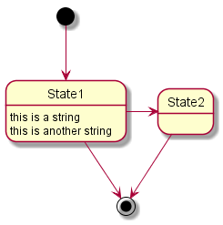
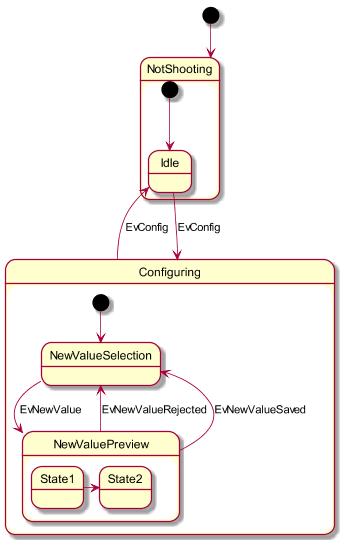
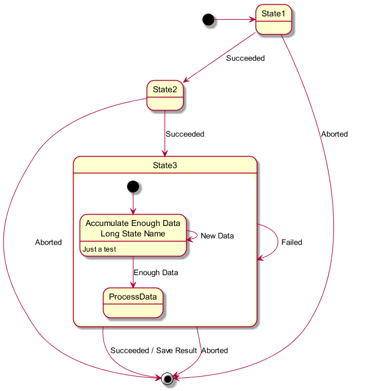
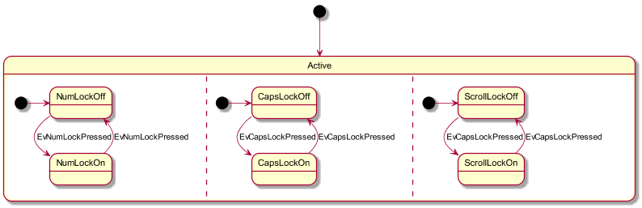
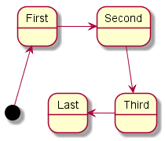
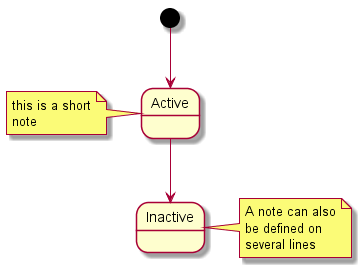
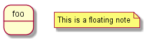
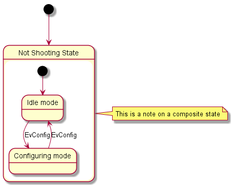
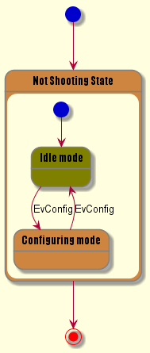

State Diagram
To be able to generate those diagram, you must have Graphviz
software installed on your machine in the default directory c:\Program
Files\GraphvizX.XX or /usr/bin/dot.
You can have a look here if you have installed Graphviz somewhere else.
Simple State
You can use [*] for the starting point and ending point of
the state diagram.
Use --> for arrows.
@startuml
[*] --> State1
State1 --> [*]
State1 : this is a string
State1 : this is another string
State1 -> State2
State2 --> [*]
@enduml
|
 |
Composite state
A state can also be composite. You have to define it using the state
keywords and brackets.
@startuml
scale 350 width
[*] --> NotShooting
state NotShooting {
[*] --> Idle
Idle --> Configuring : EvConfig
Configuring --> Idle : EvConfig
}
state Configuring {
[*] --> NewValueSelection
NewValueSelection --> NewValuePreview : EvNewValue
NewValuePreview --> NewValueSelection : EvNewValueRejected
NewValuePreview --> NewValueSelection : EvNewValueSaved
state NewValuePreview {
State1 -> State2
}
}
@enduml
|
 |
Long name
You can also use the state keyword to use long description
for states.
@startuml
scale 600 width
[*] -> State1
State1 --> State2 : Succeeded
State1 --> [*] : Aborted
State2 --> State3 : Succeeded
State2 --> [*] : Aborted
state State3 {
state "Accumulate Enough Data\nLong State Name" as long1
long1 : Just a test
[*] --> long1
long1 --> long1 : New Data
long1 --> ProcessData : Enough Data
}
State3 --> State3 : Failed
State3 --> [*] : Succeeded / Save Result
State3 --> [*] : Aborted
@enduml
|
|  |
Concurrent state
You can define concurrent state into a composite state using the --
symbol as separator.
@startuml
scale 800 width
[*] --> Active
state Active {
[*] -> NumLockOff
NumLockOff --> NumLockOn : EvNumLockPressed
NumLockOn --> NumLockOff : EvNumLockPressed
--
[*] -> CapsLockOff
CapsLockOff --> CapsLockOn : EvCapsLockPressed
CapsLockOn --> CapsLockOff : EvCapsLockPressed
--
[*] -> ScrollLockOff
ScrollLockOff --> ScrollLockOn : EvCapsLockPressed
ScrollLockOn --> ScrollLockOff : EvCapsLockPressed
}
@enduml
|
|  |
Arrow direction
You can use -> for horizontal arrows. It is possible to
force arrow's direction using the following syntax:
-down-> (default arrow)-right-> or ->-left->-up->
@startuml
[*] -up-> First
First -right-> Second
Second --> Third
Third -left-> Last
@enduml
|
 |
You can shorten the arrow by using only the first character of the direction (for example, -d- instead of
-down-)
or the two first characters (-do-).
Please note that you should not abuse this functionality : Graphviz gives usually good results without tweaking.
Note
You can also define notes using
note left of, note
right of, note top of, note bottom of
keywords.
You can also define notes on several lines.
@startuml
[*] --> Active
Active --> Inactive
note left of Active : this is a short\nnote
note right of Inactive
A note can also
be defined on
several lines
end note
@enduml
|
|  |
You can also have floating notes.
@startuml
state foo
note "This is a floating note" as N1
@enduml
|
 |
More in notes
You can put notes on composite states.
@startuml
[*] --> NotShooting
state "Not Shooting State" as NotShooting {
state "Idle mode" as Idle
state "Configuring mode" as Configuring
[*] --> Idle
Idle --> Configuring : EvConfig
Configuring --> Idle : EvConfig
}
note right of NotShooting : This is a note on a composite state
@enduml
|
 |
Skinparam
You can use the skinparam command to change colors and fonts for the drawing.
You can use this command :
You can define specific color and fonts for stereotyped states.
@startuml
skinparam backgroundColor LightYellow
skinparam state {
StartColor MediumBlue
EndColor Red
BackgroundColor Peru
BackgroundColor<<Warning>> Olive
BorderColor Gray
FontName Impact
}
[*] --> NotShooting
state "Not Shooting State" as NotShooting {
state "Idle mode" as Idle <<Warning>>
state "Configuring mode" as Configuring
[*] --> Idle
Idle --> Configuring : EvConfig
Configuring --> Idle : EvConfig
}
NotShooting --> [*]
@enduml
|
 |